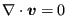

Next: Transient terms Up: Incompressible flow Previous: Incompressible flow Contents
The term  occurs in several equations, e.g. in the diffusion term of the momentum equation. Consequently, in Equation (550) the second integral and the first term of the third integral are zero. Similarly, the second term on the right hand side of Equation (576) disappears.